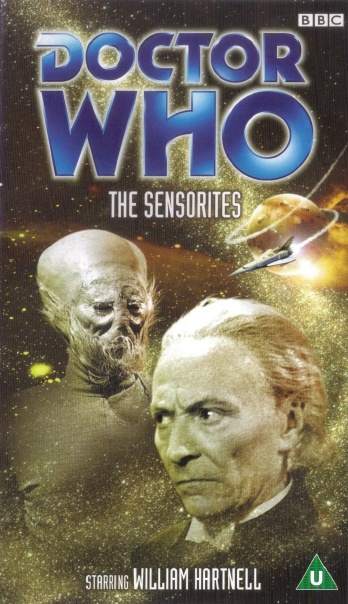
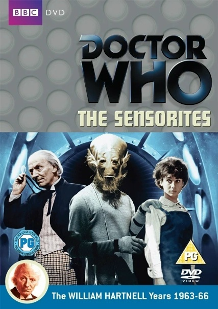
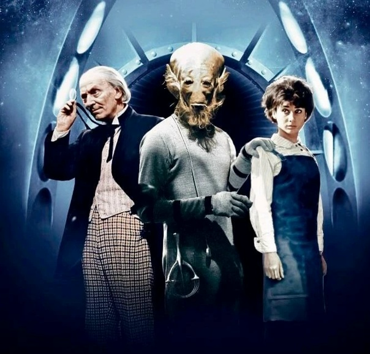

Эра Первого Доктора (1 сезон)
<<< НАЗАД ||| 7. Сенсориты ||| ДАЛЬШЕ >>>
Субтитры: Русские и Английские |  |
|---|
20 июня - 1 августа 1964
6 эпизодов по 25 мин.
| 1. Незнакомцы в пространстве 2. Воины против воли 3. Скрытая опасность 4. Борьба со смертью 5. Похищение 6. Отчаянное предприятие | Сохранились 16mm t/r |
|---|
 |  |
«Сенсориты» сталкивает команду с телепатической расой на орбите загадочной планеты: экипаж корабля парализован, а мотивы пришельцев неясны. Доктор распутывает конфликт, где страх и недоверие сильнее открытой вражды, и находит источник беды не во врагах, а в общей беде. Слабость сенсоритов — чувствительность к звуку и темноте — становится ключом к разрешению кризиса без насилия. Серия показывает, что главную угрозу порой рождает паника, а не злонамеренность.
  VHS + бокс-сет - 4 ноября 2002 |  DVD - 23 января 2012 * Версия в нашей группе |
|---|


